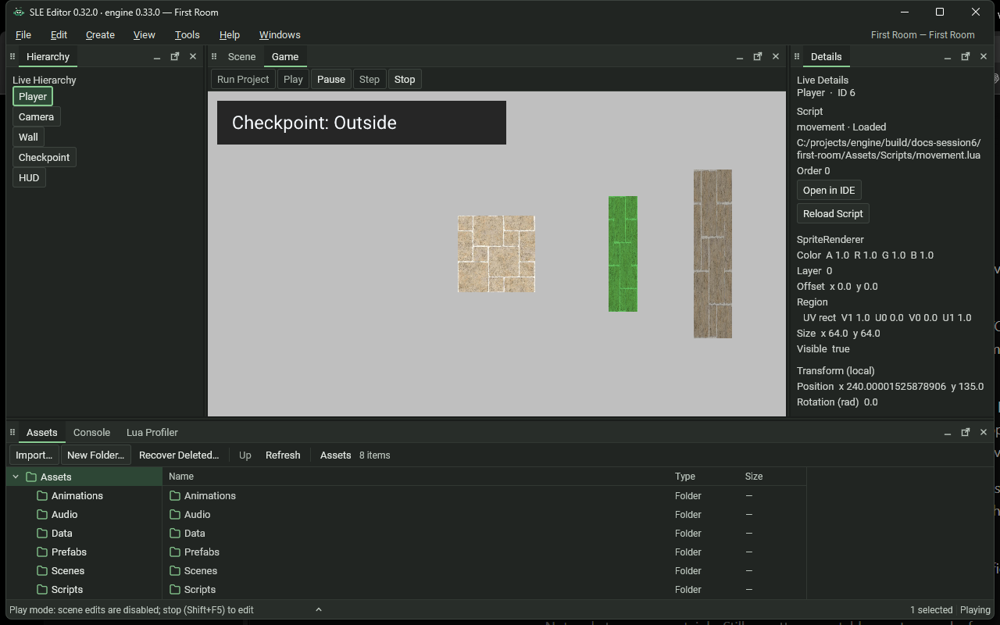

Editor tools
Use these commands in the Scene workspace. The keyboard shortcuts below are the defaults; focus the Scene or Hierarchy for viewport and selection shortcuts.
Workspace and windows
Console
Show Console from Windows to read engine and script messages while editing or playing. Use it to diagnose a failed scene load or a Lua error.
Lua Profiler
Show Lua Profiler from Windows during scripted playback to inspect the cost of Lua execution. Run the scene long enough to collect samples.
Entity Template
Open an entity template from Assets or use View → Entity Template Workspace. The workspace gives the template its own preview and document history.
Entity Template Workspace
Use View → Entity Template Workspace while editing to switch from scene authoring to the template workspace.
Show / Focus
In Windows, choose a panel and use Show or Focus to make it visible and activate its tab or host.
Minimize
Choose Minimize on a hosted panel to remove it from the active layout while keeping it available through Show / Focus.
Hide
Choose Hide on a visible panel to remove it from view. Use Show to bring it back.
Detach
Choose Detach on an eligible docked panel to move it to a floating window.
Move to
Choose Move to on a panel and select an available destination to place it in another host.
As tab
Choose As tab and a destination group to place the panel alongside its tabs.
Detach group
Choose Detach group to float the whole tab group together.
Move group to
Choose Move group to when moving a tab group together to another host.
Focus Host
Choose Focus Host to bring the window containing a panel to the foreground.
Restore Default Layout
Use Windows → Restore Default Layout to rebuild the standard editor arrangement. See workspace layout.
Saved layout
Arrange the workspace during editing. The editor persists the per-user panel arrangement for later launches.
Display recovery
After unplugging a display, reopen the editor to recover floating windows onto available displays. Use Restore Default Layout if you want the original arrangement.
Menus and preferences
File
Use File to create, open, save, package, or export documents and projects. For the required document context, see Project and assets.
Edit
Use Edit for the active document’s undo history and entity selection actions. Select an entity before invoking selection-specific commands.
Create
Use Create or the Scene context menu to add entities, sprites, cameras, event areas, components, or imported templates. Choose an editable scene first.
View
Use View to switch between Scene, Game and the Entity Template Workspace, fit the viewport or change appearance.
Tools
Use Tools to activate Scene tools, adjust snapping and pivot, or activate the Tiles tool. Use the Tile Palette to choose a paint mode.
Help
Use Help for Keyboard Shortcuts… and About SLE Editor….
Appearance
Choose View → Appearance to set the editor palette.
Dark
Choose View → Appearance → Dark for dark surfaces.
Light
Choose View → Appearance → Light for light surfaces.
Density
Choose View → Density to control spacing in the editor.
Compact
Choose View → Density → Compact to reduce spacing.
Comfortable
Choose View → Density → Comfortable for more spacing.
UI Scale
Choose View → UI Scale and select 75%, 85%, or 100% to resize the editor controls.
About SLE Editor…
Choose Help → About SLE Editor… for the application and renderer description. Check the main window title for build versions.
Keyboard Shortcuts…
Choose Help → Keyboard Shortcuts… to see the registered default bindings and their scopes.
Selection and transforms
Select Tool
Choose Select Tool or press Q. Click an entity in Scene to select it for inspection.
Move Tool
Choose Move Tool or press W. Select an entity, then drag the move handle for translation.
Rotate Tool
Choose Rotate Tool or press E. Drag the rotation handle around the active pivot or selection center.
Scale Tool
Choose Scale Tool or press R. Drag a scale handle on the selection to resize its transform.
Frame Selected
Choose Frame Selected or press F with entities selected to center and fit them in Scene. View → Fit frames the scene.
Snapping
Use the Scene toolbar snap control or Tools → Turn Snapping On/Off to switch transform snapping.
Configure Snap…
Use Tools → Configure Snap… to set grid origin and spacing, rotation increments and scale increments. Turn on snapping to apply these settings while manipulating entities. Hold Ctrl during a viewport transform to temporarily invert snapping.
Pivot/Center
Use the Scene toolbar pivot control or the corresponding Tools action to switch Rotate and Scale between the active entity’s pivot and the center of the selection.
Multi-select
In Scene, Shift-click or Ctrl-click to toggle entities in the selection, or drag empty space to select a group. You can also select multiple entities in Hierarchy. Transform tools act on the selection, and Details exposes shared editable values when applicable. See scene editing.
Select All
Use Edit → Select All or Ctrl+A in Scene or Hierarchy to select every entity in the scene document.
Delete
Select entities in an editable scene and use Edit → Delete, Delete or Backspace to remove the selected subtrees.
Duplicate
Select entities in an editable scene and use Edit → Duplicate or Ctrl+D to copy the selected subtrees and select the copies.
Undo
Use Edit → Undo or Ctrl+Z in an editable document to reverse the latest history entry. During an active edit gesture this cancels the gesture first.
Redo
Use Edit → Redo, Ctrl+Y or Ctrl+Shift+Z to reapply the next entry in the active document’s history.
Edit Entity
Select one entity in an editable scene and use Edit → Edit Entity to open it for template authoring.
Apply Changes to Entity Template
Select an eligible linked instance in an editable scene and use Edit → Apply Changes to Entity Template. The action writes changes back to the linked template. See instance overrides.
Entity hierarchy
In Hierarchy, drag an entity to a compatible parent or use the context actions to organize the tree. Descendants follow the parent’s transform. See scene hierarchy.
Import
Use Create → Import in an editable scene to bring in a scene or entity template through the document import options. To add texture and script files, use Assets.
Details and playback
Add Component
Select an editable entity and use Add Component in Details or the Create menu. Choose a supported type to add its default fields.
Property drawers
Select an entity and edit its component fields in Details. The property schema defines field types, ranges, defaults, and actions.
Reset Property
Right-click an editable property and choose Reset Property when offered to restore its schema default.
Copy Property
Right-click a property and choose Copy Property to copy its value for another compatible field.
Paste Property
Right-click a compatible writable field and choose Paste Property to apply the copied value.
Reset Component
Use the component context menu in Details to restore supported fields to their defaults.
Copy Component
Use Copy Component on a component header to copy its values.
Paste Component
Use Paste Component on a compatible editable component to apply the copied fields.
Use image size
Use the Sprite Renderer size action in Details with an image assigned to set the sprite size from the image or region.
Create Definition…
Use Create Definition… where offered by the State Machine drawer to create a definition for the component. See state machines.
Run Lua…
In Scene with a scene document open, use View → Run Lua… to open the Lua console. Run a trusted snippet and check its result or error output.
Pause
During Play, click Pause or press F6 to freeze advancement. Use Play (F5) to resume.
Step
While paused, click Step to request one simulation step and stay paused.
Live Inspector
Select an entity while playing to inspect its live state in Details. Use Pause and Step to inspect values between updates.

Reload Script
In live Details, choose Reload Script on a reloadable Lua behaviour to explicitly load the edited script. Check Console for compile or lifecycle errors.
Keep Changes
Under Transform in live Details, compare the authored and runtime values. Use Keep Changes when the preview is available to carry the eligible runtime transform changes into the authored document. Save the authored scene to persist them.
Open in IDE
On a Lua behaviour with a resolvable script in live Details, use Open in IDE to open its source in the configured editor.